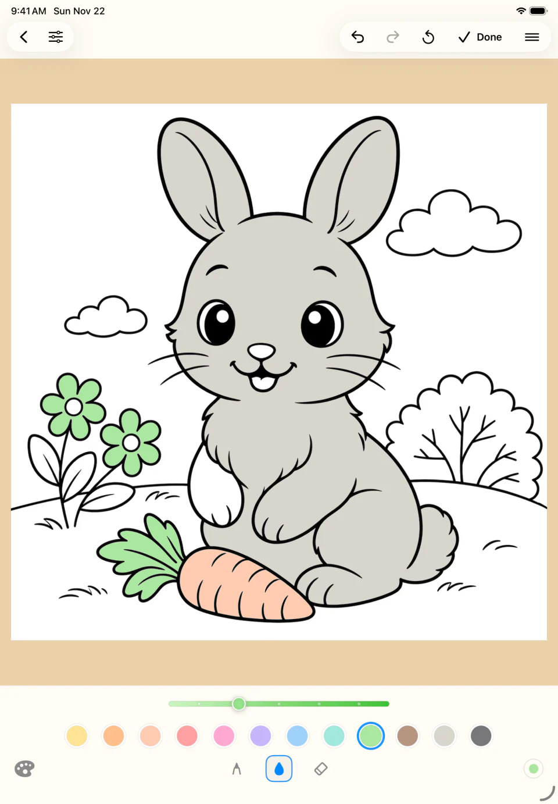
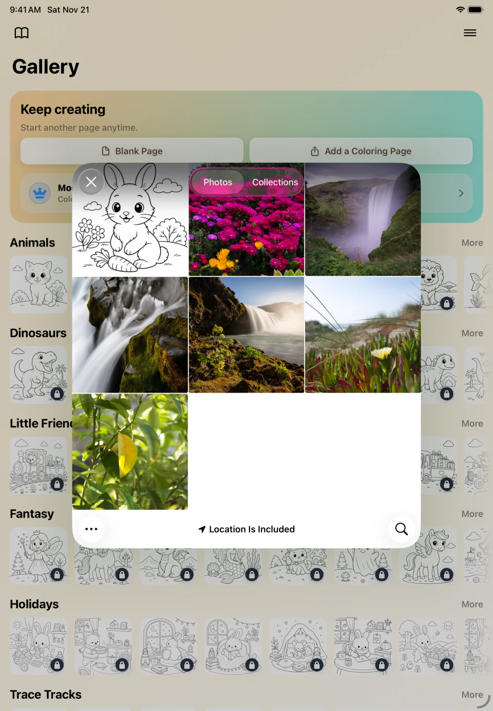
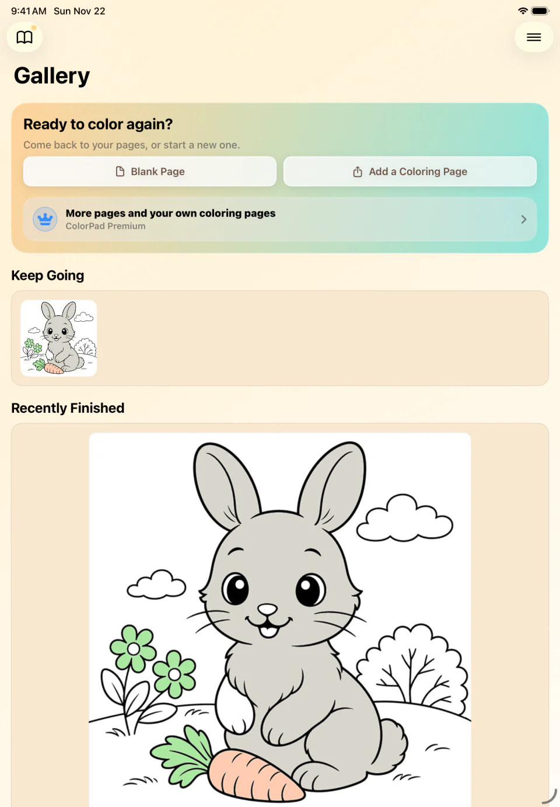

How to Color Your Own Coloring Pages on iPad
Open a black-and-white drawing from Photos in Happy ColorPad. Start with a drawing of your own or use the bunny page below. Tap inside closed shapes to fill them, or color by hand with a brush.
Already have the image in Photos? Jump to the import steps.

Get the page into Photos
- A downloaded image. To follow along, download the bunny practice page (PNG). If your image is in Files, open it there and save it to Photos from the share sheet.
- A drawing on paper. Lay the paper flat in even light. Hold your iPad straight above it and take a photo. In Photos, crop out the desk and any part of the page you don’t want to color. Crop a photo on iPad.
- A page in a PDF. Zoom in until the drawing fills the screen, then take a screenshot. Crop it to the drawing and save it to Photos. Take a screenshot on iPad.

Import and color your page
-
In the ColorPad gallery, tap Add a Coloring Page and pick your drawing from Photos. When the preview opens, tap Use.

- Tap the droplet-shaped Fill Tool, pick a color, then tap inside a closed shape. Start with the bunny’s body if you’re using the practice page. Try a brush for the small shapes around the carrot and flowers.
-
Tap Done to save your work and return to the gallery. When your drawing appears under Recently Finished, tap its thumbnail to reopen it.

To save a copy to Photos, open your drawing and tap the three-line menu at the top right of the editor. Tap Export Image, then tap Save Image in the share sheet.
Happy ColorPad is free to download on iPhone and iPad with iOS 17 or iPadOS 17 or later. You can import up to two pages per day for free. Optional Full Access removes the import limit.
Get Happy ColorPadIf the fill tool misses an area
If the color spills past the outline, tap Undo and check the drawing for gaps or shadows. Try a clearer image or take the photo again in even light. If the import preview says No separate fill areas found, tap Use, then choose a crayon to color by hand.